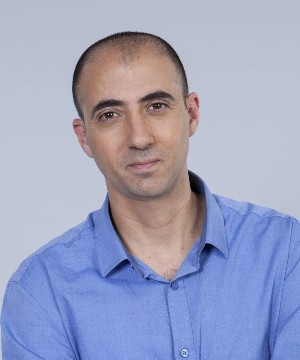

About
The Israel Association for Information Systems (ILAIS) was formed in 2005 under the leadership of Professor Phillip Ein-Dor. ILAIS is a chapter of the Association for Information Systems (AIS) serving the State of Israel. The goal of the chapter is to promote the exchange of ideas, experiences, and knowledge among scholars and professionals engaged in the development, management, and use of information and communications systems and technology.
About this site
The purpose of the ILAIS web site is to promote collaboration, networking and knowledge sharing among the Israeli information systems (IS) researchers community. This bilingual site will provide information about ILAIS activities as well as other activities which are of special interest to its members, as Israeli IS academics. It will be a portal to all ILAIS activities: teaching materials sharing, external relations initiatives, ILAIS conference and the doctoral consortium. The English content will also serve to communicate with the international IS community. The ILAIS mailing list will be used moderately to distribute relevant announcements to the members.
ILAIS Officers
